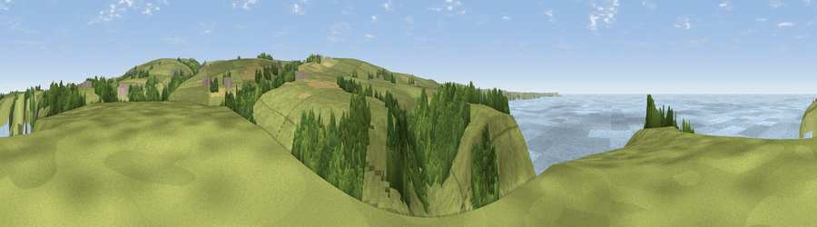

Viewpoint near Trebarwith Strand
#3439 in England · top 8% of its area beats it · near Trebarwith StrandWhere it is
The exact computed spot (SX 04700 86088). Click the marker for map links.
The view, rendered

A 360° render of this exact spot computed from the terrain model, tree cover and land cover — summer colours, afternoon light, calibrated against photographs of famous viewpoints. Real trees, hedges and buildings will differ in detail.
The panorama
Grey silhouette: terrain skyline in each direction (720 bearings, Earth curvature and refraction included). Dashed green: skyline with trees (+15 m) and buildings (+8 m) as obstacles. Blue strip: how far the ground is visible on each bearing.
Where the view opens
Wedge length = distance to the farthest visible ground on that bearing (vegetation-aware). Rings at 10, 25 and 50 km.
What fills the view
49% grassland · 35% water · 15% woodland · 1% cropland
Angular shares of the visible panorama (visual magnitude), not map area. Landscape diversity 0.46 (0–1 Shannon).
Key numbers
More beautiful places nearby
The staircase of upgrades: each row has a higher view potential than everything closer. Driving times are estimates from straight-line distance, calibrated against real road routing — check an actual route before setting out.
| Place | Direction | Drive | Score |
|---|---|---|---|
| Viewpoint near Treligga | SSE · 2 km | ~5 min | 76.6 |
| Viewpoint near Treligga | S · 3 km | ~7 min | 79.3 |
| Viewpoint near Boscastle | NE · 5 km | ~11 min | 82.0 |
| Viewpoint near Boscastle | NE · 5 km | ~12 min | 84.3 |
| Viewpoint near Boscastle | NE · 6 km | ~13 min | 85.2 |
| Viewpoint near Boscastle | NE · 10 km | ~20 min | 85.8 |
| Viewpoint near Lesnewth | NE · 11 km | ~21 min | 87.7 |
| Viewpoint near Crackington Haven | NE · 12 km | ~22 min | 88.1 |
50.64167, -4.76353 · source: screening · position refined by local search. Computed location — check access rights before visiting.